Introduction
benviplot provides convenience functions for creating
common chart types. These functions simplify the plotting process while
maintaining full ggplot2 compatibility, making them perfect for:
- Data exploration: Quickly visualize patterns
- Reports: Reduce code repetition
- Prototyping: Test different visualizations rapidly
All plot functions return standard ggplot2 objects, so you can add layers, modify themes, and customize freely.
Common Parameters
Most plot functions share these parameters:
| Parameter | Description | Default |
|---|---|---|
data |
A data.frame or tibble | Required |
x |
Variable for x-axis | Required |
y |
Variable for y-axis | Required |
variable |
Grouping variable for colors | Optional |
palette |
Palette name (e.g., “Qual5”) | Function-specific |
scale_name |
Legend title | "" |
scale_label |
Legend labels | waiver() |
color |
Single color (when no grouping) | Auto |
plot_line()
Create line charts for time series and trends.
Multiple Lines
# Filter for demonstration
library(dplyr)
housing_subset <- txhousing |>
filter(city %in% c("Austin", "Houston", "Dallas"))
plot_line(
housing_subset,
x = date,
y = sales,
variable = city,
palette = "Set5",
scale_name = "City"
)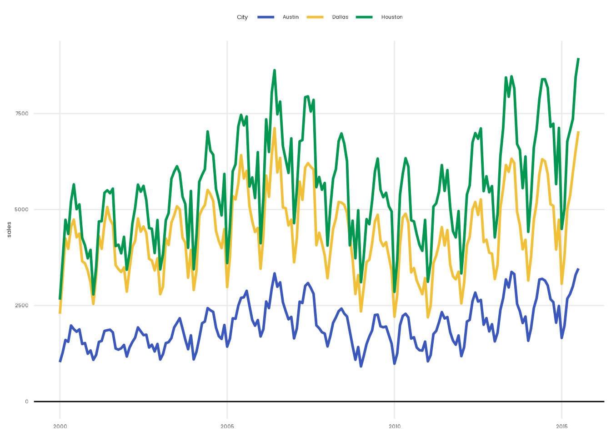
With Points
# Sample data
monthly_sales <- data.frame(
month = 1:12,
revenue = c(120, 135, 145, 142, 158, 165, 170, 168, 175, 180, 190, 195)
)
plot_line(monthly_sales, x = month, y = revenue, point = TRUE)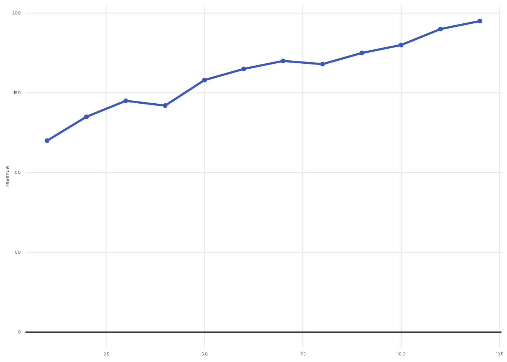
plot_column()
Create bar/column charts for categorical comparisons.
Basic Bar Chart
# Sample data
products <- data.frame(
product = c("A", "B", "C", "D", "E"),
sales = c(120, 200, 150, 180, 220)
)
plot_column(products, x = product, y = sales)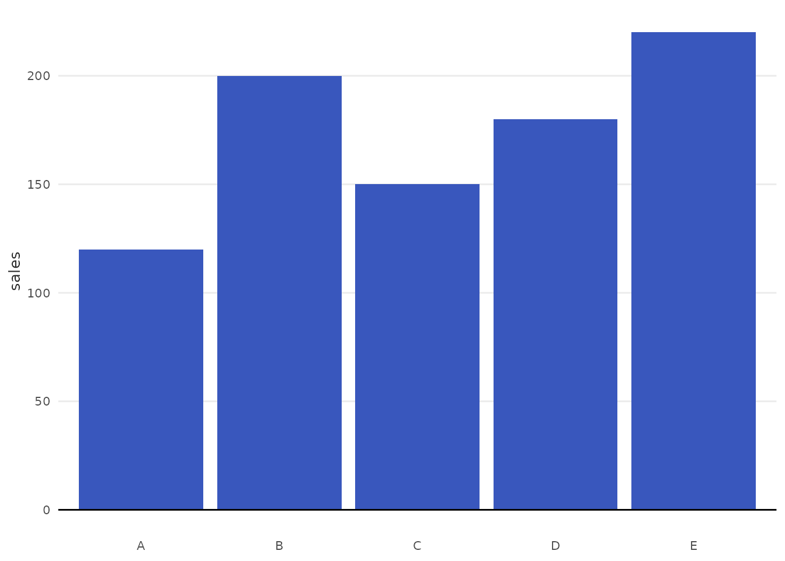
With Value Labels
# Show values on bars
plot_column(products, x = product, y = sales, text = TRUE)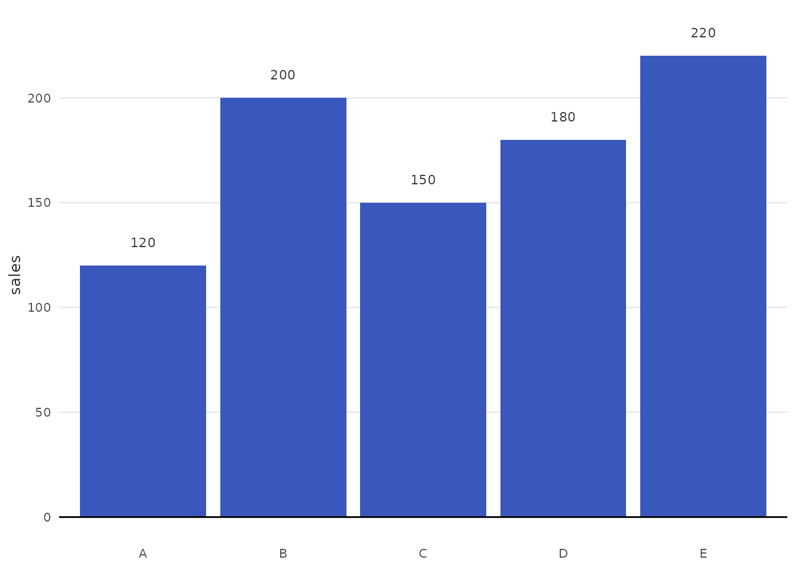
Grouped Bars
# Data with groups
quarterly <- data.frame(
quarter = rep(c("Q1", "Q2", "Q3", "Q4"), each = 3),
region = rep(c("North", "South", "West"), 4),
revenue = c(120, 130, 115, 145, 155, 140, 160, 165, 150, 175, 180, 170)
)
plot_column(
quarterly,
x = quarter,
y = revenue,
variable = region,
palette = "Set3",
scale_name = "Region"
)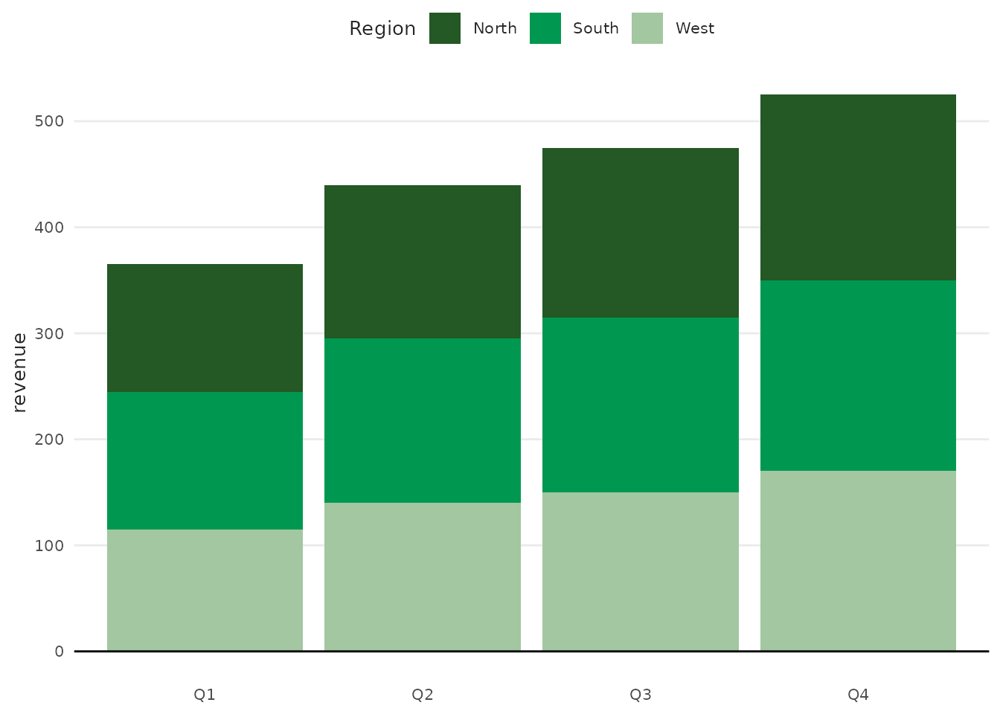
plot_scatter()
Create scatter plots to visualize relationships between variables.
With Groups
plot_scatter(
mtcars,
x = wt,
y = mpg,
variable = as.factor(cyl),
palette = "Qual5",
scale_name = "Cylinders"
)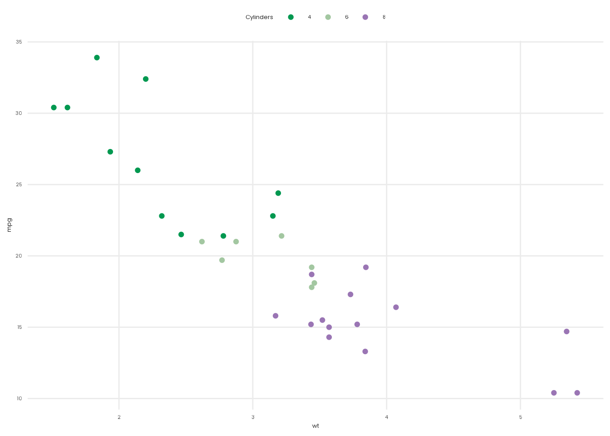
Grouped Trend Lines
plot_scatter(
mtcars,
x = wt,
y = mpg,
variable = as.factor(cyl),
fit = TRUE,
fit_variable = TRUE,
fit_method = "lm",
palette = "Set7",
scale_name = "Cylinders"
)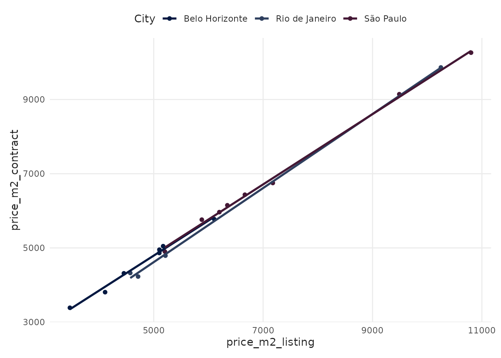
With Axis Lines
# Create sample data with negative values
scatter_data <- data.frame(
x = rnorm(50, 0, 2),
y = rnorm(50, 0, 2)
)
plot_scatter(scatter_data, x = x, y = y, zero = "both")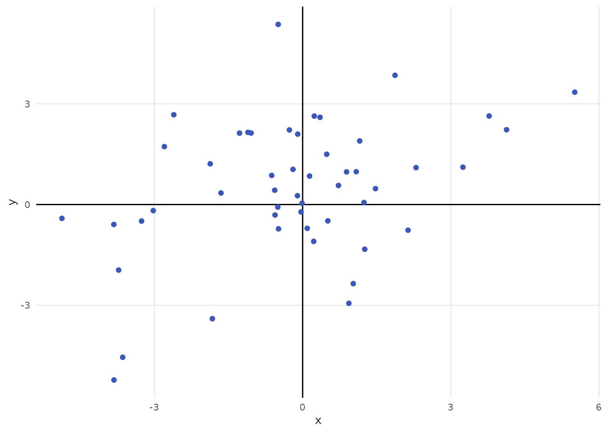
plot_area()
Create area charts for showing cumulative values or proportions.
Basic Area Chart
# Economic data over time
plot_area(economics, x = date, y = unemploy / 1000) +
labs(y = "Unemployed (millions)")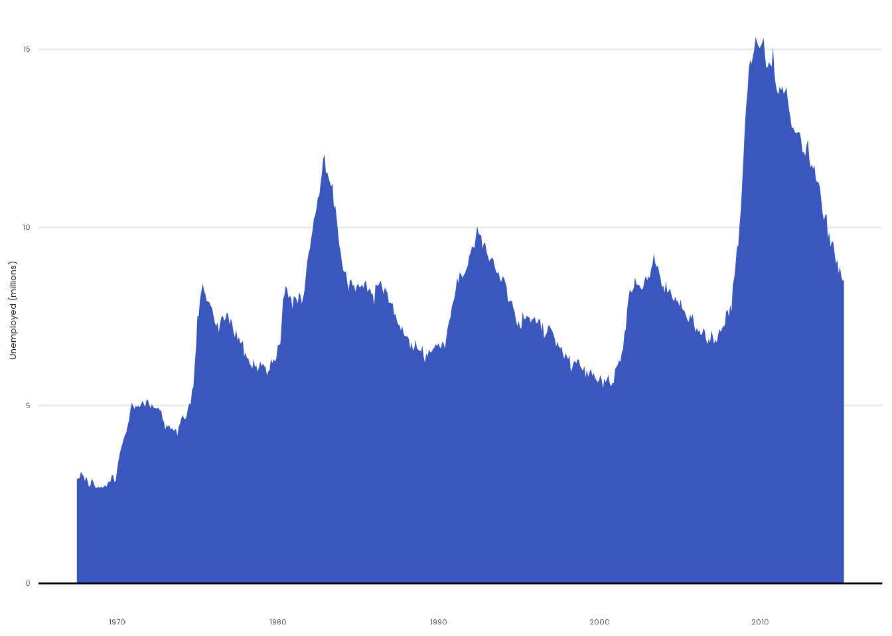
Stacked Area
# Sample data
time_series <- data.frame(
year = rep(2010:2020, 3),
category = rep(c("Product A", "Product B", "Product C"), each = 11),
value = c(
seq(100, 150, length.out = 11),
seq(80, 120, length.out = 11),
seq(60, 100, length.out = 11)
)
)
plot_area(
time_series,
x = year,
y = value,
variable = category,
palette = "Seq3",
scale_name = "Product"
)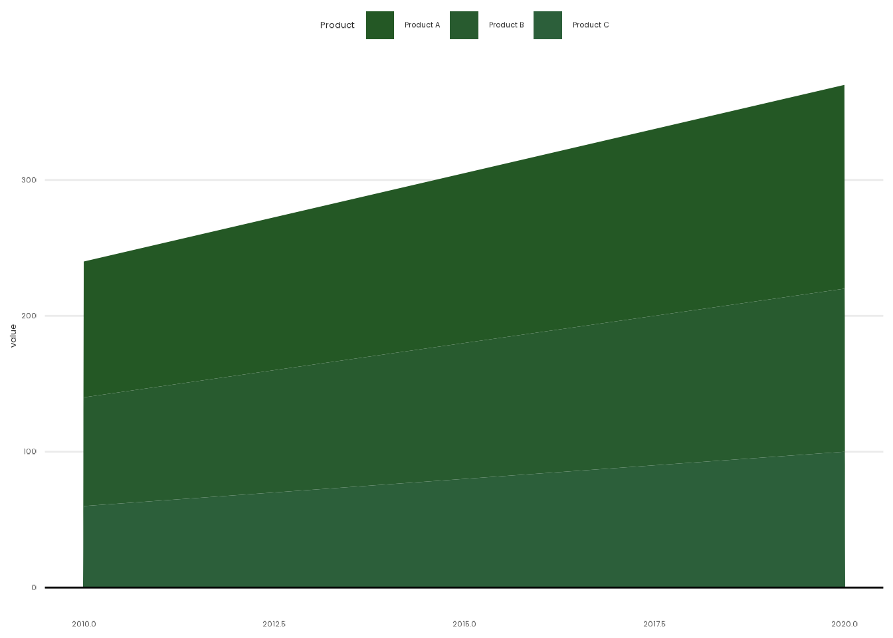
plot_histogram()
Create histograms to visualize distributions.
With Grouping
plot_histogram(
mtcars,
x = mpg,
variable = as.factor(cyl),
palette = "Set5",
scale_name = "Cylinders"
)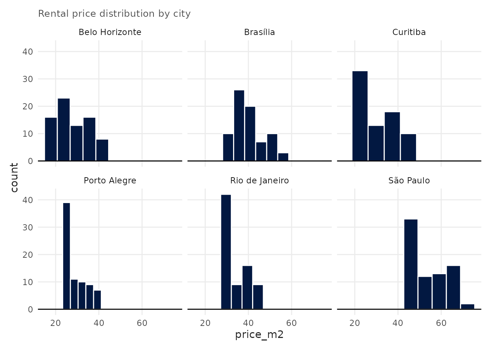
Different Binning Methods
# Using Freedman-Diaconis rule
plot_histogram(mtcars, x = mpg, bw = "fd") +
labs(subtitle = "Freedman-Diaconis binwidth")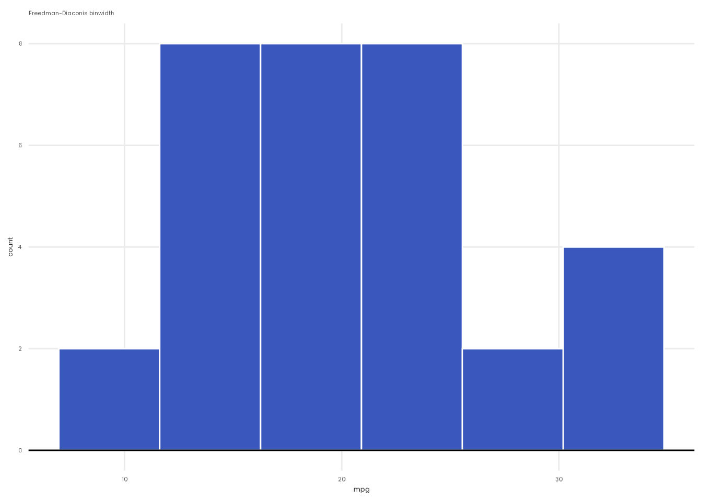
Advanced Examples
Combining Multiple Layers
All plot functions return ggplot objects, so you can add layers:
plot_line(economics, x = date, y = unemploy / 1000) +
geom_smooth(
method = "loess",
se = FALSE,
color = benvi_palette("Set1")[2],
linewidth = 1.5
) +
labs(
title = "US Unemployment Over Time",
subtitle = "With smoothed trend line",
x = "Year",
y = "Unemployed (millions)"
)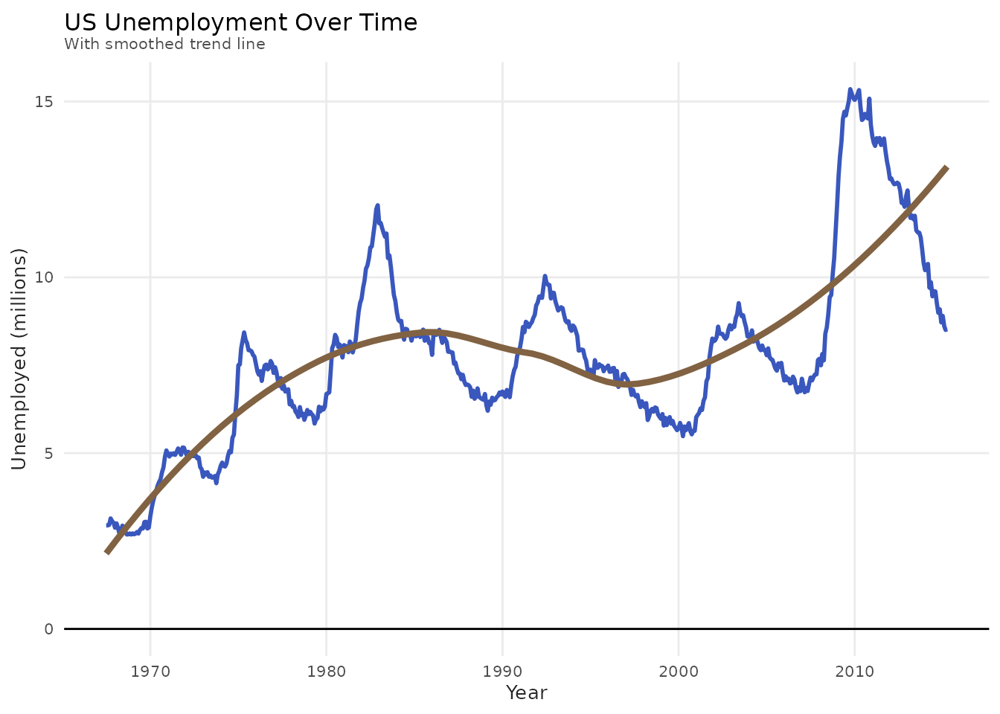
Customizing Aesthetics
plot_scatter(
mtcars,
x = wt,
y = mpg,
variable = as.factor(cyl),
palette = "Qual7",
scale_name = "Cylinders",
size = 4, # Passed to geom_point via ...
alpha = 0.7
) +
labs(
title = "Fuel Efficiency Analysis",
subtitle = "Custom size and transparency",
x = "Weight (1000 lbs)",
y = "Miles per Gallon"
)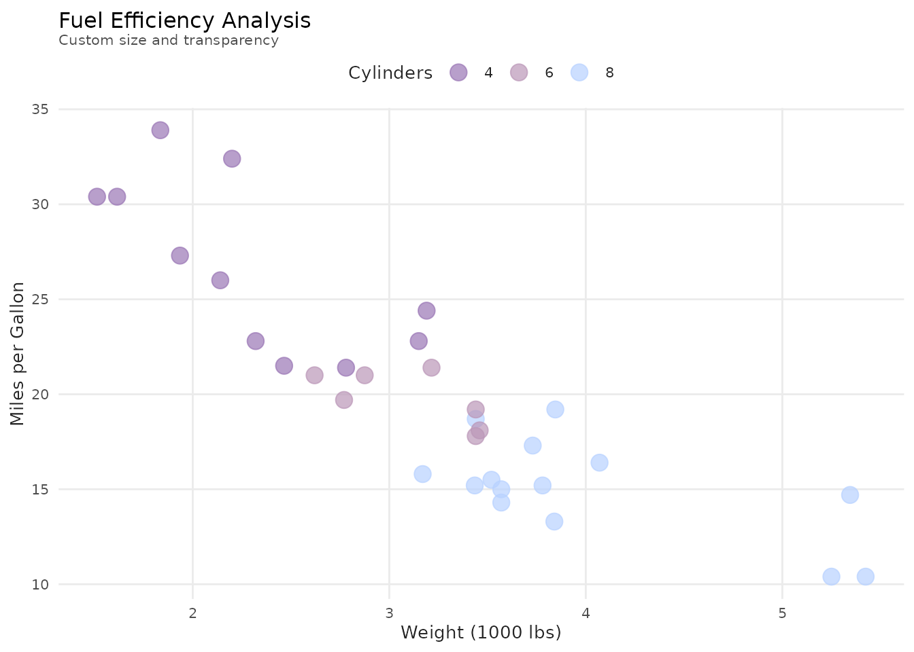
Faceting
plot_scatter(mtcars, x = wt, y = mpg) +
facet_wrap(~ cyl, labeller = label_both) +
labs(title = "MPG vs Weight by Cylinder Count")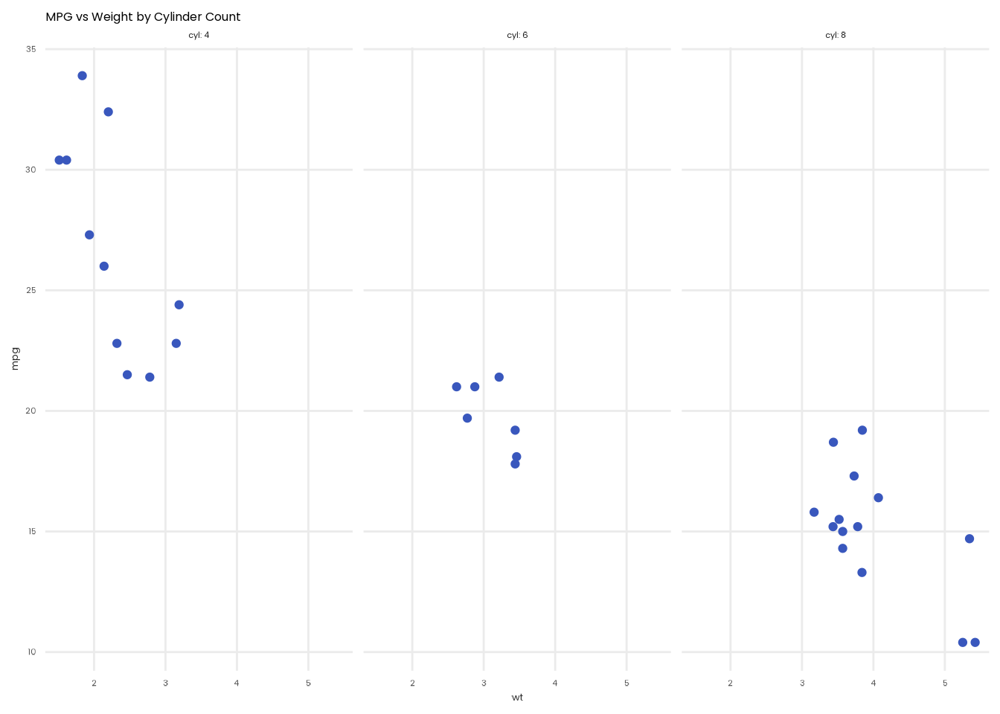
Combining Helper Functions with Manual ggplot2
# Start with helper function, then customize extensively
plot_column(products, x = product, y = sales) +
geom_hline(
yintercept = mean(products$sales),
linetype = "dashed",
color = "gray40",
linewidth = 1
) +
annotate(
"text",
x = 1,
y = mean(products$sales) + 10,
label = "Average",
hjust = 0,
color = "gray40"
) +
labs(
title = "Product Sales vs Average",
y = "Sales ($1000s)"
)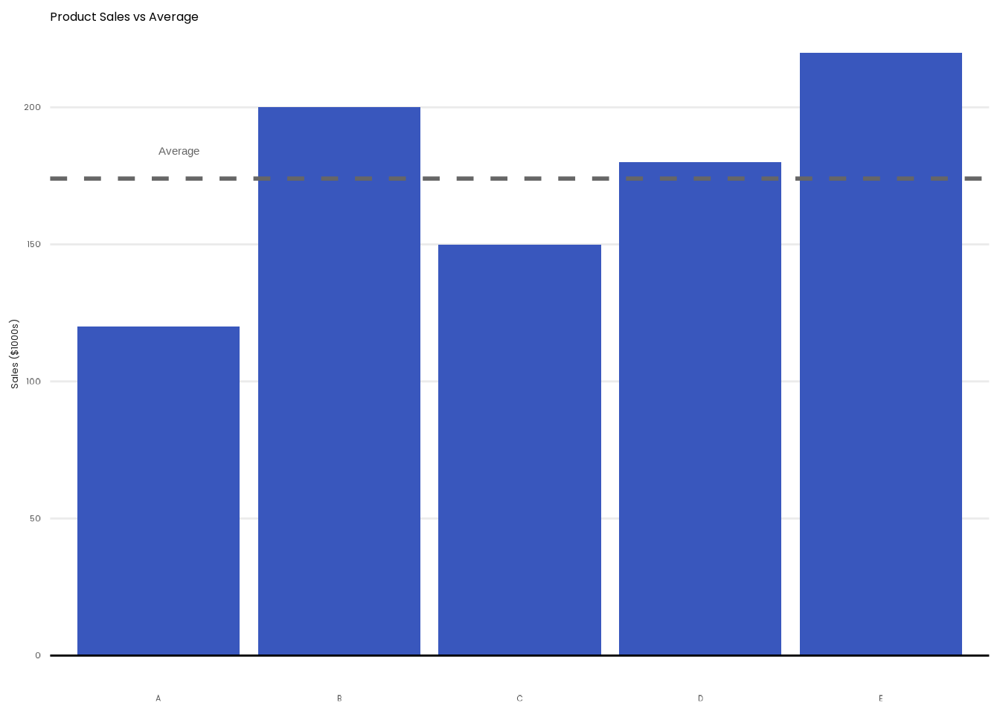
When to Use Helper Functions vs. Pure ggplot2
Use Helper Functions When:
- ✓ Doing quick exploratory analysis
- ✓ Creating standard charts repeatedly
- ✓ Writing reports with consistent styling
- ✓ Teaching/prototyping
Use Pure ggplot2 When:
- ✓ Creating complex, custom visualizations
- ✓ Need precise control over every element
- ✓ Building unique chart types
- ✓ Combining multiple geometries in unusual ways
Remember: Helper functions are just shortcuts. You can always start with a helper and customize with ggplot2 layers!
Customization Examples
Custom Colors Without variable
# Use specific benvi color
my_color <- benvi_palette("rio_qual")[3]
plot_line(economics, x = date, y = unemploy, color = my_color) +
labs(title = "Custom Color Line Chart")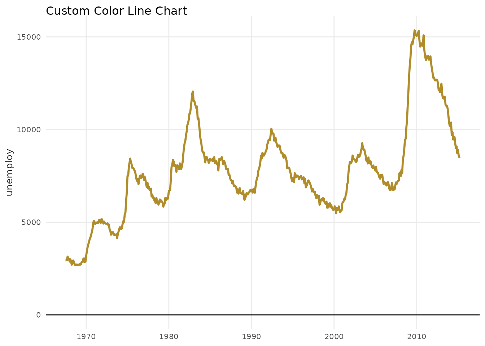
Custom Legend
plot_scatter(
mtcars,
x = wt,
y = mpg,
variable = as.factor(cyl),
palette = "Set5",
scale_name = "Number of\nCylinders",
scale_label = c("Four", "Six", "Eight")
) +
theme(legend.position = "bottom")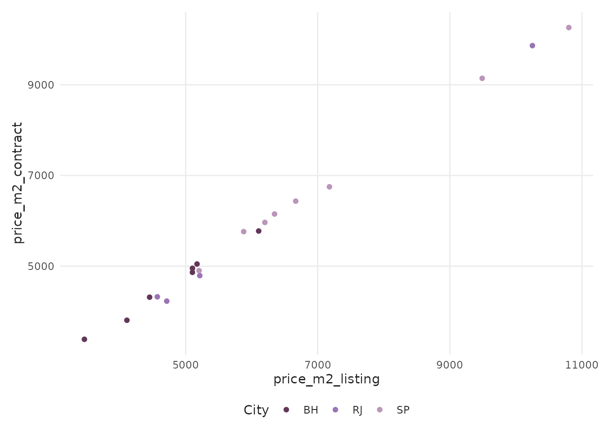
Adding Titles and Labels
plot_column(products, x = product, y = sales, text = TRUE) +
labs(
title = "Q4 Product Sales Performance",
subtitle = "All regions combined",
x = "Product Category",
y = "Revenue ($1000s)",
caption = "Source: Internal sales data"
)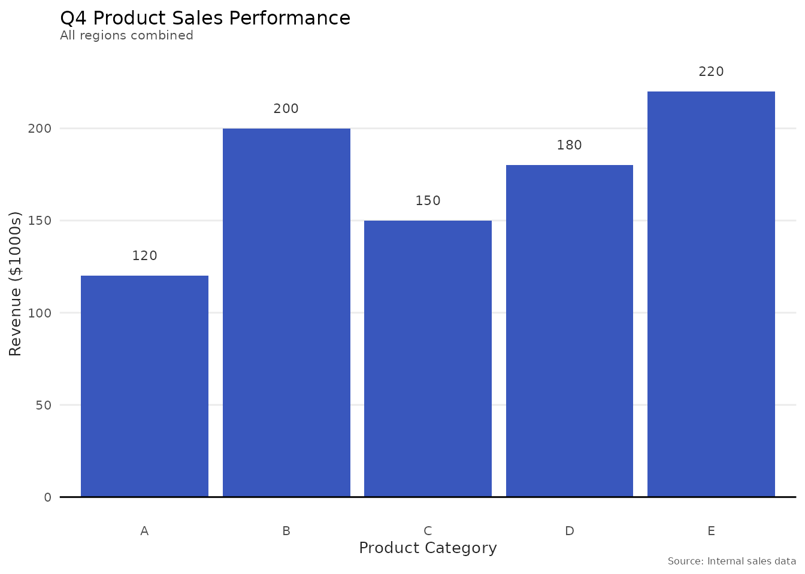
Tips and Best Practices
1. Choose Appropriate Chart Types
-
Trends over time:
plot_line()orplot_area() -
Comparing categories:
plot_column() -
Relationships:
plot_scatter() -
Distributions:
plot_histogram()
2. Limit Colors
When using variable, keep groups ≤ 7 for
readability:
# Good: 3 groups
housing_few <- housing_subset |> filter(city %in% c("Austin", "Houston"))
plot_line(housing_few, x = date, y = sales, variable = city, palette = "Set2")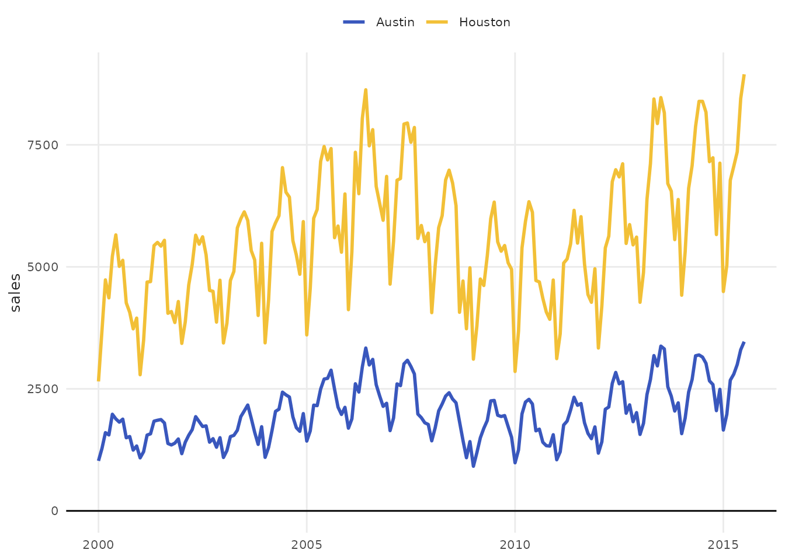
3. Use Appropriate Palettes
-
Categorical groups: Use
Qual*orSet*palettes -
Sequential/ordered: Use
Seq*palettes
4. Always Label Your Axes
plot_scatter(mtcars, x = wt, y = mpg) +
labs(
x = "Vehicle Weight (1000 lbs)",
y = "Fuel Efficiency (miles per gallon)"
)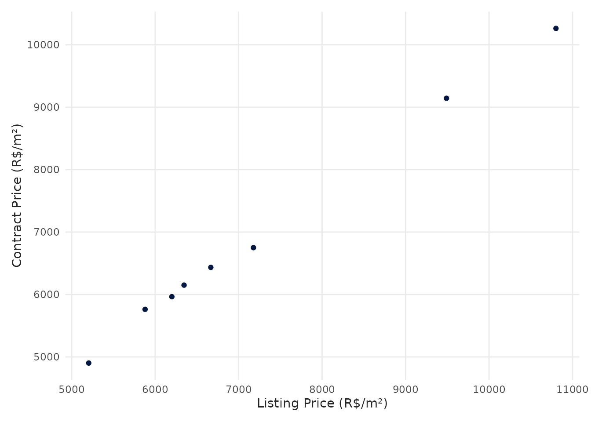
Function Reference Summary
| Function | Best For | Key Feature |
|---|---|---|
plot_line() |
Time series, trends |
point parameter |
plot_column() |
Category comparisons |
text labels |
plot_scatter() |
Correlations |
fit trend lines |
plot_area() |
Cumulative values | Stacked areas |
plot_histogram() |
Distributions | Multiple binning methods |
Troubleshooting
Colors not showing
When using variable, ensure it’s a factor or
categorical:
# Convert numeric to factor
plot_scatter(
mtcars,
x = wt,
y = mpg,
variable = as.factor(cyl), # Convert to factor!
palette = "Qual3"
)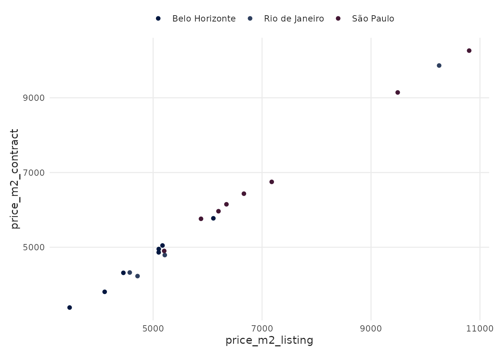
Palette errors
Check that palette exists and has enough colors:
# View available colors
benvi_palette("Qual5")
# Ensure you don't exceed available colors for discrete palettesSummary
In this vignette you learned:
- ✓ How to use all plot helper functions
- ✓ Common parameters across functions
- ✓ When to use helpers vs. pure ggplot2
- ✓ How to customize and extend helper plots
- ✓ Best practices for effective visualizations
Next Steps
- See
vignette("color-palettes")for complete palette gallery - See
vignette("themes-and-styling")for theme customization - Explore individual function documentation:
?plot_line,?plot_scatter, etc.